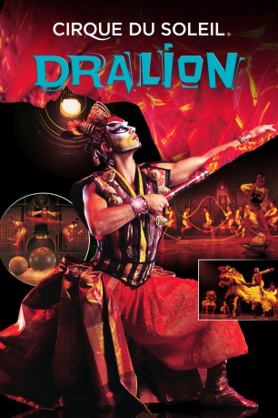

#6748 Cirque du Soleil - Dralion
 
 IMDB-Wertung: 8.3 / 10
IMDB-Wertung: 8.3 / 10  Metascore: 0
Metascore: 0 
Dralion ist die Verschmelzung aus 3000-jähriger chinesischer Zirkustradition und dem avantgardistischen Ansatz von Cirque du Soleil. Die Show zieht ihre Inspiration aus der fernöstlichen Philosophie mit ihrer ewigen Suche nach Harmonie zwischen Mensch und Natur. Der Name der Show leitet sich von ihren beiden wichtigsten Symbolen ab: dem Drachen (Dragon), der den Osten repräsentiert, und dem Löwen (Lion), der für den Westen steht.
Jahr: 2001
Dauer: 88 Minuten
FSK: 0
Land: Kanada Studio: Columbia TriStar Home EntertainmentTonspuren:
Untertitel:
Auflösung: SD (640x368) Größe: 699 MB
Genre: Familie, Musical
Regisseur: Guy Caron, David Mallet
Drehbuch: Cirque du Soleil Images
Soundtrack:
Darsteller:
- Shen Yuan als Dralion
- Zhao Jian als L'enfant-roi / Dralion
- Henriette Gbou als Gaya, Goddess of Earth
- Juliana Neves als Azala, Goddess of Air
- Sheetal Gandhi als Océane, Goddess of Water
- Luis Pelegrini als Yao, God of Fire / Bamboo Poles
- Erik Karol als Âme Force - singer
- Agnès Sohier als Âme-Force
- Chen Shi als Mini Gaya / Teeterboard
- Lei Na als Mini Azala / Teeterboard
- Peng Rui als Mini Océane
- Zhaopeng Wang als Mini Yao / Dralion
- Luan Leilei als Single Handbalancing Performer / Ballet on Lights
- Hao Desheng als Bamboo Poles / Double Trapeze Porter / Dralion
- Jiang Wei als Bamboo Poles / Dralion
- Ruan Zirong als Bamboo Poles / Dralion
- Shuai Xi als Bamboo Poles / Dralion
- Wang Bing Hua als Bamboo Poles / Dralion
- Wang Yong als Bamboo Poles / Dralion
- Xiong Ying als Bamboo Poles / Dralion
- Yuan Xi als Bamboo Poles
- Soizick Hébert als Soizick
- Johnny Filion als Johnny
- Joe De Paul als Clown
- Eric Goulem als Clown
- Viktor Kee als Juggler
- Gou Yan als Teeterboard
- He Miaomiao als Teeterboard
- Hailing Huang als Teeterboard
- Li Yang als Teeterboard / Ballet on Lights
- Lin Ying als Teeterboard / Ballet on Lights
- Miao Tingting als Teeterboard / Ballet on Lights
- Ning Ping als Teeterboard
- Ren Cuicui als Teeterboard / Ballet on Lights
- Sun Yanhong als Teeterboard
- Wang Xu als Teeterboard
- Yang Han als Teeterboard
- Yi Li als Teeterboard
- Zhang Wei als Teeterboard / Foot Juggling performer
- Zhong Yu als Teeterboard
- Wang Jiao als Double Trapeze Porter / Dralion
- Lei Lulu als Double Trapeze Flyer
- Zhou Chunmei als Double Trapeze Flyer
- Jo Ann Blondin als Chinese Drum Solo
- Shi Chunlei als Dralion
- Ivo Gueorguiev als Aerial Pas de Deux
- Xu Jian als Dralion
- Wang Shoubo als Dralion
- Yuen Yi als Dralion
- Tu Youhong als Teeterboard / Ballet on Lights performer
Datei: X:\Dokumentationen\Cirque du Soleil\Cirque du Soleil - Dralion (2001, FSK0, 640x368).avi seit 11.08.2017
Festplatte: HD Serien(SU-Z)+Dokus+Musik
 Es gibt insgesamt 17 Filme in der Gruppe 'Dokumentationen\Cirque du Soleil'
Es gibt insgesamt 17 Filme in der Gruppe 'Dokumentationen\Cirque du Soleil'